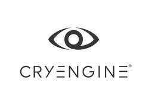
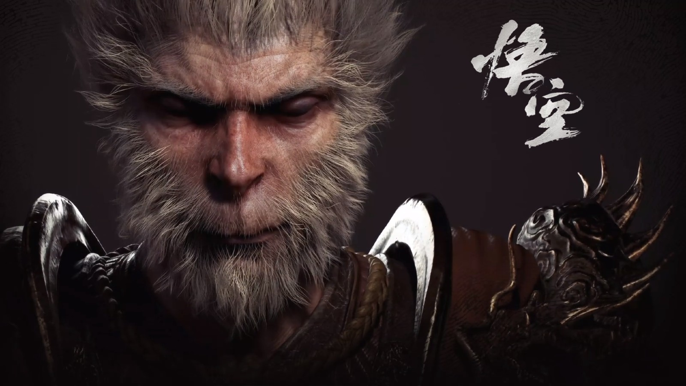
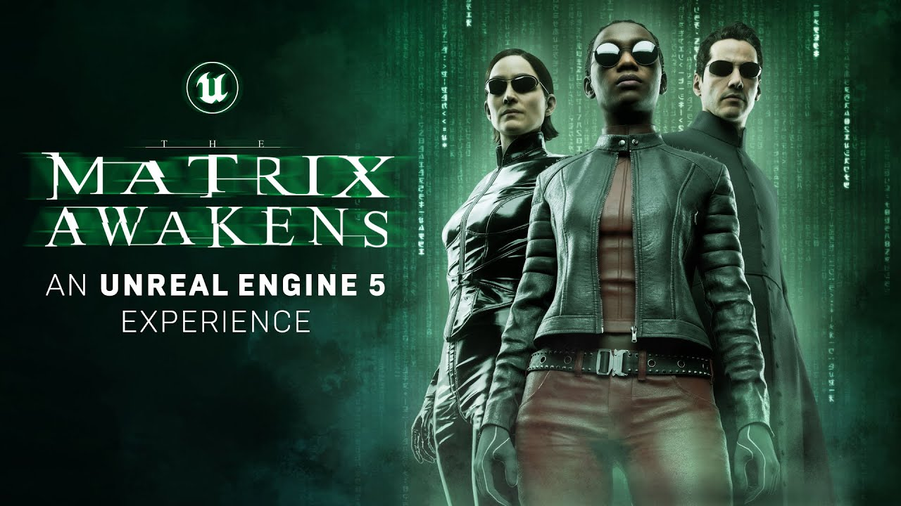
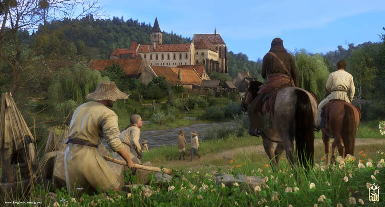
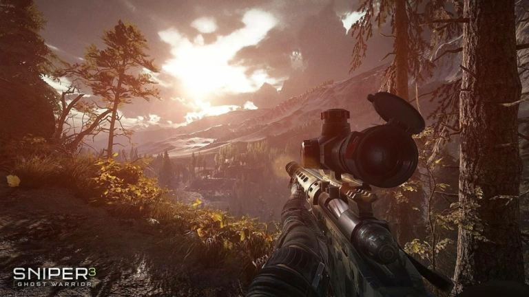

A game engine is a software framework primarily designed for the development of video games, and generally includes relevant libraries and support programs.The "engine" terminology is similar to the term "software engine" used in the software industry.
Game engine can also refer to the development software utilizing this framework, typically offering a suite of tools and features for developing games.
Developers can use game engines to construct games for video game consoles and other types of computers. The core functionality typically provided by a game engine may include a rendering engine ("renderer") for 2D or 3D graphics, a physics engine or collision detection (and collision response), sound, scripting, animation, artificial intelligence, networking, streaming, memory management, threading, localization support, scene graph, and video support for cinematics. Game engine implementers often economize on the process of game development by reusing/adapting, in large part, the same game engine to produce different games or to aid in porting games to multiple platforms.
These game engines are sometimes called "middleware" because, as with the business sense of the term, they provide a flexible and reusable software platform which provides all the core functionality needed, right out of the box, to develop a game application while reducing costs, complexities, and time-to-market — all critical factors in the highly competitive video-game industry. Game engines usually provide platform abstraction, allowing the same game to run on various platforms (including game consoles and personal computers) with few, if any, changes made to the game source-code.
Before game engines, games were typically written as singular entities.As game engine technology matures and becomes more user-friendly, the application of game engines has broadened in scope. They are now being used for serious games: visualization, training, medical, and military simulation applications, with the CryEngine being one example.To facilitate this accessibility, new hardware platforms are now being targeted by game engines, including mobile phones (e.g. Android phones, iPhone) and web browsers (e.g. WebGL, Shockwave, Flash, Trinigy's WebVision, Silverlight, Unity Web Player, O3D and pure DHTML).
As technology ages, the components of an engine may become outdated or insufficient for the requirements of a given project. Since the complexity of programming an entirely new engine may result in unwanted delays (or necessitate that a project restart from the beginning), an engine-development team may elect to update their existing engine with newer functionality or components.
Logos of some Game Engines
Logo of Rage
Logo of Frostbite
Logo of Unigine
Logo of Hedgehog Engine
Logo of Unreal Engine
Logo of Unity Engine

Logo of CRY Engine
Logo of Anvil Engine
Game Engines examples:
4A Engine
Anvil
appGameKit
Babylon
Blender Game Engine
Build engine
Creation Engine
Cry Engine
Decima
ego
Enforce
id Tech 4
id Tech 5
id Tech 6
id Tech 7
iMUSE
Infinity Engine
IW engine
Jedi
Nebula Engine
RPG Maker
Silent Storm engine
TOSHI
Unity
Unreal Engine
XnGine
Unreal Engine
Unreal Engine (UE) is a 3D computer graphics game engine developed by Epic Games, first showcased in the 1998 first-person shooter game Unreal. Initially developed for PC first-person shooters, it has since been used in a variety of genres of games and has seen adoption by other industries, most notably the film and television industry. Written in C++, the Unreal Engine features a high degree of portability, supporting a wide range of desktop, mobile, console and virtual reality platforms.
The latest generation, Unreal Engine 5, was launched in April 2022. As its predecessor released in March 2014, its source code is available on GitHub after registering an account, and commercial use is granted based on a royalty model. Epic waives their royalties margin for games until developers have earned US$1 million in revenue and the fee is waived if developers publish on the Epic Games Store. Epic has included features from acquired companies like Quixel in the engine, which is seen as helped by Fortnite's revenue.
Previous Generation
First Generation
Unreal Engine 2
Unreal Engine 3
Unreal Engine 4
Unreal Engine 5
Whats can we do with Unreal Engine 5
The world’s most open and advanced real-time 3D creation tool
Build bigger worlds.
Leverage game-changing fidelity.
Animate and model in context
Whats new in Unreal Engine 5
Faster, easier, more efficient
Massively detailed
Dynamic global illumination and reflections
Quality or performance? Why choose? You can have it both
Asset development on the spot
Procedural audio design
Free UE5-ready sample projects
Large Number of next generation of PC and Playstation 5 games will be created using unreal engine 5
Demo on Unreal Engine 5
Large Number of next generation of PC and Playstation 5 games will be created using Unreal Engine 5
Black Myth: Wukong

Black Myth: Wukong already boasted impressive visuals while it was being developed using UE4 but, in 2021, developer Game Science announced that it was shifting to Unreal Engine 5. The title is a third-person action RPG based on Chinese folklore that mixes exploration with combat sequences against regular foes and impressive bosses.
The Matrix Awakens: An Unreal Engine 5 Experience

'The Matrix Awakens: An Unreal Engine 5 Experience' is a free, boundary-pushing cinematic and open-world interactive tech demo that combines the power of PlayStation®5 with UE5.An original concept written and cinematically directed by Lana Wachowski and James McTeigue, this boundary-pushing technical demo features Keanu Reeves and Carrie-Anne Moss reprising their roles as Neo and Trinity while also—in a blending of the real and unreal—playing themselves.Many of the VFX crew from the original film came back together for the digital execution of the experience, including John Gaeta, Kim Libreri, Jerome Platteaux, George Borshukov, and Michael Gay, in collaboration with teams across both Epic Games and partners such as SideFX, Evil Eye Pictures, WetaFX (formerly Weta Digital), and many others.The demo morphs from breathtakingly realistic cinematic to fast-paced third-person shooter experience, complete with action-packed car chase sequence, and also provides a rich, vastly detailed open world to explore, set within the universe of 'The Matrix'.
Cry Engine
CryEngine is a game engine designed by the German game developer Crytek. It has been used in all of their titles with the initial version being used in Far Cry, and continues to be updated to support new consoles and hardware for their games The CryEngine software development kit (SDK), originally called Sandbox Editor, is the current version of the level editor used to create levels for CryEngine by Crytek. Tools are also provided within the software to facilitate scripting, animation, and object creation. It has been included with various Crytek games (including, but not limited to, Crysis and Far Cry), and is used extensively for modding purposes. The editing style is that of the sandbox concept, with the emphasis on large terrains and a free style of mission programming. The editor can also construct indoor settings.
Previous Generation
Cry Engine 1
Cry Engine 2
Cry Engine 3
Cry Engine 4
Cry Engine 5
Whats can we do with cry Engine 6
Crytek has confirmed that they are working on new CryEngine version. It is not known what features it will include right now. The developers have stated that it will improve global illumination system and will probably include ray tracing as well as stable DirectX 12 support. Beta program for the engine will also be available..
.
Whats new in cry Engine 6
The most powerful real-time development platform for achieving the highest quality experience.
Take advantage of CryEngine's legendary best-in-class visuals to blow players away.
AI & Animation Fill your worlds with the most realistic characters ever seen in gaming.
Unleash the talent of audio artists and give them complete control over their creations.
Take advantage of CryEngine's built-in high-end physics solution.
Performance Accomplish real-time visualization, interaction and immersion with CryEngine.
A suite of tools that put the power to create stunning experiences at your fingertips.
Large Number of next generation of PC and Playstation 5 games will be created using Cry engine
Demo on Cry Engine
Large Number of next generation of PC and Playstation 5 games will be created using Cry Engine
Kingdom Come: Deliverance

A humble, young blacksmith loses everything to war. As he tries to fulfill the dying wish of his father, Fate drags him into the thick of a conspiracy to save a kidnapped king and stop a bloody conflict. You will wander the world, fighting as a knight, lurking in the shadows as a rogue, or using the bards charm to persuade people to your cause. You will dive deep into a sweeping, epic, nonlinear story from Daniel Vávra, an award-winning designer from the Mafia series. Our unique, first-person combat system lets you wield sword or bow in both one-on-one skirmishes and large-scale battles. All of this and more brought to life beautifully with next-gen visuals delivered via CryEngine.
Sniper Ghost Warrior 3

The enemies are smarter. The weapons are deadlier. The stakes are higher. Sniper Ghost Warrior 3 is an experience like no other. Alone in an Eastern European country, you are caught in the middle of a new Cold War between Russia and the US. Surviving is more than just pulling the trigger. Navigate harsh countryside, improvise weapons, negotiate with warring factions and eliminate targets. To succeed, you must become more than a sniper.
Unity Engine
What is Unity?
Unity is so much more than the world’s best real-time development platform – it’s also a robust ecosystem designed to enable your success.
Unity is a cross-platform game engine developed by Unity Technologies, first announced and released in June 2005 at Apple Worldwide Developers Conference as a Mac OS X game engine. The engine has since been gradually extended to support a variety of desktop, mobile, console and virtual reality platforms. It is particularly popular for iOS and Android mobile game development and is considered easy to use for beginner developers and is popular for indie game development.
The engine can be used to create three-dimensional (3D) and two-dimensional (2D) games, as well as interactive simulations and other experiences. The engine has been adopted by industries outside video gaming, such as film, automotive, architecture, engineering, construction, and the United States Armed Forces
Previous Generation
Unity Engine 2 (2007)
Unity Engine 3 (2010)
Unity Engine 4 (2012)
Unity Engine 5 (2015)
Unity Engine (2017 - present)
What can we do with Unity Engine 6
Unity 2021 brought multiple new features such as Bolt, Unity's Visual Scripting system, a new multiplayer library to support multiplayer games, improved Il2cpp runtime performance, Volumetric clouds for the High Definition Render pipeline. Shadow caching and Screen Space Global Illumination for HDRP. For the Universal Render Pipeline it added new features such as point light shadows, Deferred renderer and general core engine improvements and fixes
What's new in Unity Engine
Added the Feature API to check which Adaptive Performance feature is available on the current platform.
Mobile: Enabled boost mode during engine startup.
Mobile: Integrated the Unity Profiler to easily profile Adaptive Performance.
Mono: Enabled Brotli compression for Windows with the Mono runtime.
API Changes: iOS added - Added iPad Air 5 and iPhone SE 3 to devices.
Improved integration Search in Unity.
Added a transparency scaler for Adaptive Performance. Mobile: Added settings for Adaptive Performance to control the Indexer's thermal and performance actions when using the Device Simulator.
Unity Gaming Services
Unity Gaming Services is an end-to-end platform that is designed to help you build, engage, and grow your game. This documentation provides general information on features used across the Unity Gaming Services portfolio.Build your live game in a single modular platform with tools for multiplayer services, game operations, user acquisition, and monetization.
Build your foundation
Services to build your game and iterate as you grow.
Multiplayer
Build your online backend, host game servers, and connect players in-game.
Accounts
Enable players to sign in across platforms and save progress across devices.
Configure and manage
Lay the foundations for seamless live game management.
Engage your players
Understand your players and deliver engaging experiences
Analytics solutions
End-to-end data and analysis solutions, designed to support your entire studio.
Player engagement
Test and update gameplay without app updates or client code changes.
Community solutions
Connect players with scalable voice and text chat.
Monitor performance
Identify and resolve errors impacting your game's stability.
Grow your mobile game & acquire new players
Monetization and growth
Monetize
Drive revenue with in-game ads
Mediationᴮᴱᵀᴬ
Increase ad demand and drive more revenue from your game
Acquire
Find the right users to grow your audience
In-app Purchases
Connect in-game stores across platforms
Demo on Unity Engine 6
Benefits
A Free to use platform
Unity 3D has a free as well as a pro version with several features attached to it. Initially, you can choose the version which is free and get the major gaming features highlights. Further, you can utilize the distinct focal points with the Pro-Version for developing games with high-end features like sound channel, 3D composition booster, feature playback etc. Unity 3D game development gives permission to all sorts of developers to make full-fledged full version games without having to rev up costs of any kind.
Compatible with Multiple Platforms
Unity 3D is compatible with all the operating systems including iOS, Android, Macs, Steam, PCs, and even the consoles too. With Unity 3D it is very easy to create several games for all the platforms and design several stages of the games without any hassle. Porting to the next stage is very easy with Unity compared to other platforms. Each stage of the game has got some interesting elements and with Unity you can transport those elements to the next stage and make it more interesting than before.
Multiplayer Gaming
Unity Game Engine is the mother of some of the best multiplayer games. This is because the game engine offer multiple features that motivates developers to develop mind-blowing games for players all across the internet. One of the best examples is Solstice Arena which is very popular multiplayer game that has a huge fan base all across the web. The whole game development process is very challenging but with Unity the process becomes easy, and fun.
Create 2D Games
Although, Unity 3D is known for 3D games, however, the platform is also very effective in creating engaging 2D Games for mobiles, PC’s and even for gaming consoles. Unity 4.3 has an implicit 2D motor which helps game developers in developing effective and efficient 2D Games. The developer can easily integrate the physical science of a 2D world and create mind-blowing games with eye-catching features.
Online Tutorials
If you have an inclination towards gaming and want to learn about Unity 3D game development then there is a good news for you. There are a lot of training videos and tutorials available over the internet if you are a true seeker to learn unity game development. You can create simple games with a little training and can learn the art of more complex games development with more training and experience.
Easy to Use
If you are presuming that unity game development is incredibly difficult, then hold on for a second! That’s really not the actual picture. On the contrary, one should understand that the platform is actually not that difficult or complex. In fact, it is easy to use without the help of a supervisor. You can easily use your creativity to play with creative ideas and gameplay after getting a hold of the platform features.